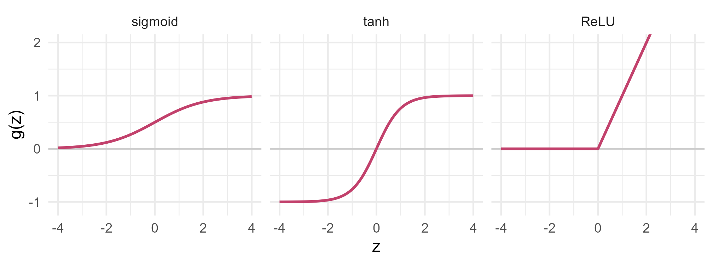

Module 7 · Lesson 11 of 14 Week 114 of 160 About 5–7 hours
Neural networks
Layers of simple units, trained by gradient descent
Open the box: a neural network is logistic regressions stacked in layers. Compute one neuron by hand, train it by gradient descent, run a forward pass through a small network, and write backpropagation yourself to fit the boiler’s efficiency curve. Then use nnet for the full boiler model, the reactor alarms and the soft sensor, see random starts land in different places, tune the size and the weight decay by cross-validation, and find out when a network beats simpler models and when it doesn’t.
Neural networks are behind almost every headline about artificial intelligence: image recognition, translation, chatbots. Those networks have billions of parameters and need specialized hardware. But the idea underneath is old and small, and you already know its building block. This lesson builds a neural network from that block, trains one by hand, and then uses R’s nnet package for the kind of small networks that suit plant data: a few inputs, a few hundred or thousand samples, and one hidden layer.
No magic here! A neural network is a stack of logistic regressions, and training one is the gradient descent you met in Module 4. By the end of this lesson, you’ll have written one from scratch.
In this lesson you’ll:
- see that a single neuron with a sigmoid is a logistic regression
- train it by gradient descent, and compare with
glm() - run a forward pass through a network with one hidden layer
- write backpropagation, and fit a curve with it
- fit networks with
nnet::nnet(), and see why scaling, random starts and weight decay matter - tune a network by cross-validation, and compare it with this module’s other methods
One neuron
A neuron (or unit) takes inputs x_1, \ldots, x_p, forms a weighted sum plus a bias, and passes it through an activation function g:
a = g\big(b + w_1 x_1 + \cdots + w_p x_p\big) .
With the sigmoid activation g(z) = 1/(1 + e^{-z}), the output is between 0 and 1, and the neuron is exactly a logistic regression: the weights are its coefficients, the bias its intercept. Other common activations are \tanh(z), which is a sigmoid stretched to run from -1 to 1, and the ReLU, \max(0, z), the default in deep learning:
z <- seq(-4, 4, by = 0.05)
act <- rbind(data.frame(z, g = 1 / (1 + exp(-z)), f = "sigmoid"), data.frame(z, g = tanh(z), f = "tanh"),
data.frame(z, g = pmax(0, z), f = "ReLU"))
act$f <- factor(act$f, c("sigmoid", "tanh", "ReLU"))
ggplot(act, aes(z, g)) + geom_hline(yintercept = 0, color = "grey80") + geom_line(color = "#C2416C", linewidth = 0.9) +
facet_wrap(~f) + coord_cartesian(ylim = c(-1.1, 2)) + labs(x = "z", y = "g(z)") + theme_minimal(base_size = 12)
The setup code loads the boiler data (scaled, in B), the reactor alarms (standardized, in Fz), and the soft sensor’s four chemistry tags (standardized, in S), with the folds from earlier lessons. Scaling the inputs matters for networks, as it does for kNN and SVMs, for a reason explained below.
Your turn. Lesson 4’s logistic regression of fault on the temperature deviation and the valve’s SD had coefficients -2.989, 1.419 and 1.594. Treat it as a neuron: compute its output for alarm A001 by hand.
The sigmoid of the weighted sum: exp(-z).
w <- coef(glm(fault ~ temp_dev_C + valve_sd_pct, family = binomial, data = faults))
x <- c(1, faults$temp_dev_C[1], faults$valve_sd_pct[1])
z <- sum(w * x)
1 / (1 + exp(-z))0.781, exactly Lesson 4’s predicted probability for A001. The neuron’s weighted sum is the log-odds, and its sigmoid turns it into a probability. Every unit in a network does this, with its own weights.
Training by gradient descent
glm() fits a logistic regression with Newton’s method (iteratively reweighted least squares). Neural networks are trained with something simpler: gradient descent. Start with some weights, compute the gradient of the loss (here, the average log loss) with respect to every weight, and take a small step downhill:
w \leftarrow w - \eta \, \nabla L(w) .
\eta is the learning rate. For a single sigmoid neuron with the log loss, the gradient has a famously simple form: \nabla L = \frac{1}{n} X^\top(\hat p - y), the inputs weighted by the errors.
Your turn. Starting from zero weights, run 2,000 steps of gradient descent with \eta = 0.5 on the standardized inputs, and compare the weights with glm()’s coefficients on the same inputs.
The gradient uses the errors, p - y.
Z <- cbind(1, scale(faults$temp_dev_C), scale(faults$valve_sd_pct))
y <- faults$fault
w <- c(0, 0, 0)
for (step in 1:2000) {
p <- 1 / (1 + exp(-Z %*% w))
w <- w - 0.5 * t(Z) %*% (p - y) / nrow(Z)
}
rbind(gradient_descent = as.numeric(w), glm = coef(glm(y ~ Z[, 2] + Z[, 3], family = binomial)))The same to four decimals: 0.1875, 1.6673 and 1.4117. After only 100 steps, they’d be 0.16, 1.61 and 1.32: close, but not there. Gradient descent is slower than Newton’s method, but each step is cheap, and it works for any differentiable model, however many layers it has. With inputs on very different scales, it crawls, because one learning rate has to suit every weight; that’s one reason networks need scaled inputs.
Backpropagation
Training a network means gradient descent on all its weights at once. The gradient with respect to the output weights is easy: it’s like a linear regression’s. For the hidden weights, the chain rule carries the error backwards through the network: each hidden unit’s share of the error is the output error times its output weight times the slope of its activation (1 - h^2 for tanh). That’s backpropagation: one forward pass to compute the predictions, one backward pass to compute every gradient.
Your turn. Fit a network with 3 tanh hidden units to the boiler’s efficiency against load (both scaled), with 3,000 steps of gradient descent at \eta = 0.1. Complete the backward pass, and find the RMSE in efficiency points.
The derivative of \tanh(z) is 1 - \tanh(z)^2: (1 - hid^2).
x <- B$load
y <- (B$eff - 84) / 2
set.seed(7111)
H <- 3
W1 <- rnorm(H); b1 <- rnorm(H); W2 <- rnorm(H); b2 <- 0
for (step in 1:3000) {
hid <- tanh(outer(x, W1) + matrix(b1, length(x), H, byrow = TRUE))
e <- as.numeric(hid %*% W2 + b2 - y)
gW2 <- colMeans(hid * e); gb2 <- mean(e)
d_hid <- outer(e, W2) * (1 - hid^2)
gW1 <- colMeans(d_hid * x); gb1 <- colMeans(d_hid)
W2 <- W2 - 0.1 * gW2; b2 <- b2 - 0.1 * gb2; W1 <- W1 - 0.1 * gW1; b1 <- b1 - 0.1 * gb1
}
2 * sqrt(mean(e^2))An RMSE of 0.80 points with load alone, against 1.74 for a straight line in load, and 0.76 for Lesson 9’s natural spline. Ten parameters and 3,000 small steps have bent three tanh curves into the boiler’s efficiency curve. Every deep-learning library does exactly this, with automatic differentiation instead of hand-written gradients, and with smarter step rules than a fixed \eta.
x <- (boiler$load_pct - 65) / 20; y <- (boiler$efficiency_pct - 84) / 2
set.seed(7111); H <- 3; W1 <- rnorm(H); b1 <- rnorm(H); W2 <- rnorm(H); b2 <- 0
for (step in 1:3000) {
hid <- tanh(outer(x, W1) + matrix(b1, length(x), H, byrow = TRUE)); e <- as.numeric(hid %*% W2 + b2 - y)
gW2 <- colMeans(hid * e); gb2 <- mean(e); d_hid <- outer(e, W2) * (1 - hid^2)
gW1 <- colMeans(d_hid * x); gb1 <- colMeans(d_hid)
W2 <- W2 - 0.1 * gW2; b2 <- b2 - 0.1 * gb2; W1 <- W1 - 0.1 * gW1; b1 <- b1 - 0.1 * gb1
}
gx <- seq(min(x), max(x), length.out = 200)
gh <- tanh(outer(gx, W1) + matrix(b1, 200, H, byrow = TRUE))
fitdf <- data.frame(load = 65 + 20 * gx, eff = 84 + 2 * (gh %*% W2 + b2))
units <- data.frame(load = rep(65 + 20 * gx, H), eff = 78 + as.vector(sweep(gh, 2, W2, "*")), unit = rep(1:H, each = 200))
ggplot(boiler, aes(load_pct, efficiency_pct)) + geom_point(color = "grey70", size = 0.8) +
geom_line(data = units, aes(load, eff, group = unit), linetype = "dashed", color = "#2a78d6", linewidth = 0.5) +
geom_line(data = fitdf, aes(load, eff), color = "#C2416C", linewidth = 1) +
labs(x = "Load (%)", y = "Efficiency (%)") + theme_minimal(base_size = 12)
NoteGo deeper: the chain rule, written out
Take one sample, with squared-error loss L = \tfrac12 e^2, e = \hat y - y, \hat y = b_2 + \sum_k c_k h_k and h_k = \tanh(a_k), a_k = b_{1k} + w_k x. Then
\frac{\partial L}{\partial c_k} = e\,h_k, \qquad \frac{\partial L}{\partial w_k} = \underbrace{e \, c_k}_{\partial L/\partial h_k} \cdot \underbrace{(1 - h_k^2)}_{\partial h_k/\partial a_k} \cdot \underbrace{x}_{\partial a_k/\partial w_k} .
The code averages these over the samples. The middle factor is why activations matter: a sigmoid’s slope is at most 1/4, and in a deep network the product of many such factors shrinks toward zero (the vanishing gradient problem). ReLU’s slope is 1 wherever it’s active, which is one reason deep learning switched to it. The Elements of Statistical Learning, section 11.4, derives backpropagation for a general single-hidden-layer network.
Networks with nnet
nnet::nnet() fits networks with one hidden layer, using a quasi-Newton optimizer (BFGS) instead of plain gradient descent. Its main arguments:
size: the number of hidden units;decay: weight decay, a ridge penalty \lambda\sum w^2 on all the weights, which keeps the network smooth;linout = TRUEfor a linear output (regression); the default is a sigmoid output (classification);maxit: the maximum number of iterations.
Weight decay penalizes all weights alike, so the inputs should be on similar scales. That’s the other reason for scaling.
Your turn. Fit a network with 5 hidden units and a decay of 0.01 to the boiler’s efficiency, using all three scaled inputs. Find the training RMSE and the number of weights.
For regression, the output is linear: linout = TRUE.
set.seed(7112)
net <- nnet::nnet(eff ~ load + o2 + air, data = B, size = 5, decay = 0.01, linout = TRUE, maxit = 1000, trace = FALSE)
c(train_rmse = sqrt(mean((B$eff - predict(net))^2)), n_weights = length(net$wts))A training RMSE of 0.44 points, with 26 weights: (3 + 1) \times 5 into the hidden layer, and (5 + 1) into the output. That’s close to the noise level of 0.45. Without linout = TRUE, the output would pass through a sigmoid and could never exceed 1, so every prediction of an efficiency of 85% would fail silently: a classic nnet mistake.
Your turn. A network’s loss surface has many local minima, and nnet() starts from random weights. Fit the same network without weight decay from 5 different random starts (seeds 1 to 5), and compare the training RMSEs.
Each start uses its own seed, s.
sapply(1:5, function(s) {
set.seed(s)
net <- nnet::nnet(eff ~ load + o2 + air, data = B, size = 5, decay = 0, linout = TRUE, maxit = 1000, trace = FALSE)
sqrt(mean((B$eff - predict(net))^2))
})About 2.47, 0.45, 0.73, 0.44 and 0.48: the same network, five answers. The first start got stuck in a poor local minimum, with an error worse than a straight line’s, and the third is mediocre. Weight decay helps (it smooths the loss surface), and in practice, you fit several starts and keep the best, or average their predictions. The exact numbers can differ slightly between computers, because the optimizer’s path is sensitive to tiny rounding differences.
Tuning a network
The size and the decay are tuning parameters, and cross-validation chooses them, as always. On these data, sizes of 2, 5 and 10 and decays of 0.001, 0.01 and 0.1 give CV RMSEs from 0.47 (size 5, decay 0.01) to 0.71 (size 2): two hidden units are too few for the curves, and ten overfit unless the decay restrains them.
Your turn. Cross-validate the network with 5 hidden units and a decay of 0.01, on Lesson 9’s folds.
Predict the held-out fold, B[fold == j, ].
err <- numeric(400)
for (j in 1:10) {
set.seed(7113)
net <- nnet::nnet(eff ~ load + o2 + air, data = B[fold != j, ], size = 5, decay = 0.01,
linout = TRUE, maxit = 1000, trace = FALSE)
err[fold == j] <- B$eff[fold == j] - predict(net, B[fold == j, ])
}
sqrt(mean(err^2))About 0.47, essentially tied with Lesson 9’s GAM (0.462) on the same folds, and four times better than the linear model (1.70). The network found the load curve, the oxygen sweet spot and the air temperature’s effect without being told any of their shapes. But the GAM got there with a model you can plot term by term and test, and the network is a set of 26 weights that mean nothing on their own. When the two tie, the interpretable one usually wins.
Your turn. Classify the reactor alarms with a network: 3 hidden units, a decay of 0.1, and a softmax output (nnet() uses one automatically when the response is a factor with more than two levels). Cross-validate it on Lessons 4 and 5’s folds.
type = "class" returns the predicted classes.
pred <- factor(rep(NA, 800), levels = levels(Fz$cause))
for (j in 1:10) {
set.seed(7114)
net <- nnet::nnet(cause ~ ., data = Fz[ffold != j, ], size = 3, decay = 0.1, maxit = 1000, trace = FALSE)
pred[ffold == j] <- predict(net, Fz[ffold == j, ], type = "class")
}
mean(pred != Fz$cause)18.25% wrong: better than multinomial regression (20.1%), about the same as LDA, and not as good as QDA (15.6%). Over sizes of 3 to 10 and decays of 0.01 to 1, the best is 18.1%. The network can, in principle, learn QDA’s curved boundaries, but with 800 alarms and a hundred-odd weights, it can’t find them as reliably as a model that assumes the right shape. Flexible models need data in proportion to their flexibility.
Challenge round
Challenge 1 · The soft sensor. Cross-validate a network with 2 hidden units and a decay of 0.01 on the soft sensor’s four chemistry tags, with Lesson 2’s time blocks as folds, and compare it with a linear model on the same blocks.
Predict the held-out block, S[block == j, ].
e_net <- numeric(500); e_lin <- numeric(500)
for (j in 1:10) {
set.seed(7115)
net <- nnet::nnet(y ~ ., data = S[block != j, ], size = 2, decay = 0.01, linout = TRUE, maxit = 1000, trace = FALSE)
e_net[block == j] <- S$y[block == j] - predict(net, S[block == j, ])
e_lin[block == j] <- S$y[block == j] - predict(lm(y ~ ., data = S[block != j, ]), S[block == j, ])
}
c(network = sqrt(mean(e_net^2)), linear = sqrt(mean(e_lin^2)))About 0.205 for the network and 0.194 for the linear model: the network is worse. The chemistry makes \log(\text{MI}) nearly linear in these tags, so the network’s flexibility only adds variance, and the blocked folds, which ask it to predict weeks it hasn’t seen, punish that. Larger networks did no better (0.21). A neural network is a tool for unknown, strongly nonlinear relationships with plenty of data, not a universal upgrade.
Challenge 2 · Counting weights. How many weights does a network with p inputs, one hidden layer of H units and K outputs have, counting the biases? Write a function, and use it for the alarm network with 10 hidden units (p = 6, K = 4) and for a network with 100 inputs (a spectrum), 20 hidden units and one output.
Each output unit has a weight from each hidden unit, plus a bias: H + 1.
n_weights <- function(p, H, K) (p + 1) * H + (H + 1) * K
c(alarms = n_weights(6, 10, 4), spectra = n_weights(100, 20, 1))114 for the alarm network and 2,041 for the spectrum network, which would be trained on 80 calibration samples. Without a strong decay penalty, that network would interpolate the calibration data perfectly and predict nothing. nnet() refuses networks with more than 1,000 weights unless you raise MaxNWts, a hint that small networks are what it’s for.
Quick quiz
1. A single neuron with a sigmoid activation is equivalent to what?
Its weighted sum is the log-odds, and the sigmoid turns it into a probability.
2. What does backpropagation compute?
A forward pass gives the predictions; the backward pass gives the gradients.
3. What is weight decay?
It keeps the network smooth, and it’s tuned by cross-validation like ridge’s \lambda.
4. Why did five fits of the same network give different errors?
Fit several starts and keep the best, or average them.
5. What happens if you forget linout = TRUE for a regression?
For an efficiency near 85, every prediction would be wrong.
6. On the soft sensor, the linear model beat the network. Why?
Flexibility pays only when there’s nonlinearity to find, and enough data to find it.
Wrap-up
You’ve built a neural network from its parts, and learned when to use one. Here’s what you’ve learned:
- A neuron is a weighted sum and an activation. With a sigmoid, it’s a logistic regression.
- Gradient descent steps downhill on the loss. For the neuron, 2,000 steps reproduced
glm()’s coefficients. - A hidden layer builds new features from the inputs, and backpropagation gets every gradient with the chain rule. Your hand-written network fitted the efficiency curve with an RMSE of 0.80.
- nnet fits one-hidden-layer networks. Scale the inputs, use
linout = TRUEfor regression, use weight decay, and try several random starts. - Tuned by CV, the network tied the boiler GAM (about 0.47 against 0.462), was beaten by QDA on the alarms (18% against 15.6%), and lost to a linear model on the soft sensor.
TipPractice in RStudio (optional, about an hour)
Download the three data files into your project’s data-raw/ folder.
- Plot the network. Install NeuralNetTools and run
plotnet(net)on the boiler network. Thengarson(net)andolden(net)give two measures of each input’s importance. Do they agree with the GAM? - Average several starts. Fit the boiler network from 10 random starts, average their predictions, and cross-validate the average. Is it better than one network?
- A ReLU network. Change your backpropagation code to use ReLU, \max(0, z), whose derivative is 1 for positive z and 0 otherwise. How many hidden units does it need to match the tanh network?
- Learning rate. Rerun your backpropagation with \eta = 0.01, 0.1 and 1, and plot the RMSE against the step number for each.
NoteKey words from this lesson
- Neuron (unit)
- A function that forms a weighted sum of its inputs plus a bias, and applies an activation function.
- Activation function
- The nonlinear function in a neuron: sigmoid, tanh or ReLU, for example.
- Hidden layer
- A layer of neurons between the inputs and the output.
- Gradient descent
- Minimizing a function by repeatedly stepping against its gradient.
- Learning rate
- The size of each gradient descent step, \eta.
- Backpropagation
- Computing the gradient of a network’s loss with respect to all its weights, with the chain rule, from the output back to the inputs.
- Weight decay
- A ridge penalty on a network’s weights.
- Universal approximation theorem
- The result that a network with one hidden layer and enough units can approximate any continuous function on a bounded region.
- Local minimum
- A point where the loss is lower than all nearby points, but not the lowest overall.
NoteWant to read more?
- James, Witten, Hastie and Tibshirani, An Introduction to Statistical Learning (2nd edition), chapter 10, “Deep Learning”, sections 10.1, 10.2 and 10.7 (fitting a network).
- Hastie, Tibshirani and Friedman, The Elements of Statistical Learning, chapter 11, “Neural Networks”, including the issues in training them (section 11.5).
- Michael Nielsen, Neural Networks and Deep Learning (free online book), chapter 2, “How the backpropagation algorithm works”.
- William Venables and Brian Ripley, Modern Applied Statistics with S (4th edition, Springer, 2002), section 8.10, on
nnet(), by its authors.